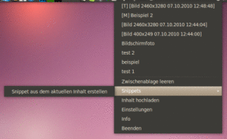
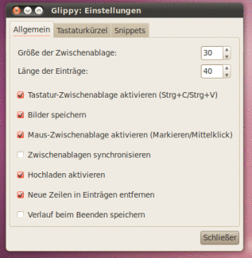

Glippy
Archivierte Anleitung
Dieser Artikel wurde archiviert, da er - oder Teile daraus - nur noch unter einer älteren Ubuntu-Version nutzbar ist. Diese Anleitung wird vom Wiki-Team weder auf Richtigkeit überprüft noch anderweitig gepflegt. Zusätzlich wurde der Artikel für weitere Änderungen gesperrt.
Anmerkung: Die Weiterentwicklung wurde eingestellt, eine Paketquelle ist nicht mehr vorhanden.
Zum Verständnis dieses Artikels sind folgende Seiten hilfreich:
Glippy  ist ein Clipboard-Manager für GNOME, der im Gegensatz zu Glipper noch aktiv entwickelt wird. Glippy läuft als Applet im GNOME Panel und bietet Unterstützung für die beiden in Ubuntu verwendeten Zwischenablagen und sowohl für in die Zwischenablage kopierte Texte als auch für Bilder und Bildausschnitte (für Details zu den Funktionen siehe unten), einen Verlauf der letzten Inhalte der Zwischenablage, die Möglichkeit Texte und Bilder ins Internet hochzuladen sowie die Möglichkeit, sogenannte "Snippets" (s.u.) festzulegen. Außerdem wird ein Indikator-Applet für Ubuntu angeboten.
ist ein Clipboard-Manager für GNOME, der im Gegensatz zu Glipper noch aktiv entwickelt wird. Glippy läuft als Applet im GNOME Panel und bietet Unterstützung für die beiden in Ubuntu verwendeten Zwischenablagen und sowohl für in die Zwischenablage kopierte Texte als auch für Bilder und Bildausschnitte (für Details zu den Funktionen siehe unten), einen Verlauf der letzten Inhalte der Zwischenablage, die Möglichkeit Texte und Bilder ins Internet hochzuladen sowie die Möglichkeit, sogenannte "Snippets" (s.u.) festzulegen. Außerdem wird ein Indikator-Applet für Ubuntu angeboten.
Alternativen zu Glippy sind im Artikel Zwischenablage zu finden.
Installation¶
Glippy ist nicht in den offiziellen Paketquellen enthalten. Der Autor des Programms unterhält jedoch ein "Personal Package Archiv" (PPA) [1], aus dem die jeweils aktuelle Version installiert werden kann.
PPA¶
Adresszeile zum Hinzufügen des PPAs:
ppa:bikooo/glippy
Hinweis!
Zusätzliche Fremdquellen können das System gefährden.
Ein PPA unterstützt nicht zwangsläufig alle Ubuntu-Versionen. Weitere Informationen sind der  PPA-Beschreibung des Eigentümers/Teams bikooo zu entnehmen.
PPA-Beschreibung des Eigentümers/Teams bikooo zu entnehmen.
Damit Pakete aus dem PPA genutzt werden können, müssen die Paketquellen neu eingelesen werden.
Nach dem Aktualisieren der Paketquellen kann das Programm über folgende Pakete installiert [2] werden:
glippy
glippy-ubuntu-mono (optional, stellt ein monochromes Symbol bereit, das besser zum Ubuntu-Design passt )
 mit apturl
mit apturl
Paketliste zum Kopieren:
sudo apt-get install glippy glippy-ubuntu-mono
sudo aptitude install glippy glippy-ubuntu-mono
Benutzung¶
Nach der Installation startet man Glippy über den Eintrag im Hauptmenü: "Anwendungen -> Zubehör -> Glippy Clipboard Manager". Wer das Programm regelmäßig nutzt (was in der Regel ja der Fall ist), der sollte sich einen Eintrag im Autostart [3] anlegen.
Standardmäßig startet Glippy als Applet im Benachrichtigungsfeld. Wird es mit der Option --appindicator gestartet, startet Glippy in der Benachrichtigungsanzeige/dem Indikator-Applet. Diese Option wurde eine Zeit lang wegen gelegentlichen Abstürzen nicht empfohlen, kann laut dem Autor aber mittlerweile ohne Bedenken benutzt werden.
Maus- und Tastatur-Zwischenablage¶
In Ubuntu existieren zwei Zwischenablagen parallel, die "übliche" "Tastatur-Zwischenablage", die mittels
Strg +
C und
Strg +
V sowie "Kopieren" und "Einfügen" bedient werden kann und des Weiteren die "Maus-Zwischenablage", in der Text landet, wenn er markiert (ausgewählt) wird, und deren Inhalt mit einem Mittelklick  eingefügt werden kann.
eingefügt werden kann.
Glippy unterstützt beide Zwischenablagen, die Unterstützung für die eine oder die andere kann in den Glippy-Einstellungen ( auf das Applet und "Einstellungen" wählen) aktiviert bzw. deaktiviert werden. Sind beide Zwischenablagen aktiviert, kann dort auch die Synchronisierung beider Zwischenablagen eingestellt werden. In diesem Fall ist der aktuelle Inhalt beider Zwischenablagen nach einem auf das Applet an oberster Stelle der Verlaufsliste hinter einem [Z] zu sehen. Ist die Synchronisierung nicht aktiviert, so steht [M] für den Inhalt der Maus- und [T] für den der Tastatur-Zwischenablage. Ein auf einen Eintrag in der Verlaufsliste fügt dessen Inhalt in beide Zwischenablagen ein.
auf das Applet und "Einstellungen" wählen) aktiviert bzw. deaktiviert werden. Sind beide Zwischenablagen aktiviert, kann dort auch die Synchronisierung beider Zwischenablagen eingestellt werden. In diesem Fall ist der aktuelle Inhalt beider Zwischenablagen nach einem auf das Applet an oberster Stelle der Verlaufsliste hinter einem [Z] zu sehen. Ist die Synchronisierung nicht aktiviert, so steht [M] für den Inhalt der Maus- und [T] für den der Tastatur-Zwischenablage. Ein auf einen Eintrag in der Verlaufsliste fügt dessen Inhalt in beide Zwischenablagen ein.
Inhalte hochladen¶
Ist die Option in den Einstellungen aktiviert, kann man mittels des Hochladen-Dialogs ( auf das Applet und "Hochladen" auswählen) in der Zwischenablage befindlichen Text bei Pastebin bzw. in der Zwischenablage befindliche Bilder (aus Programmen oder dem Dateimanager kopiert) bei Imgur hochladen.

Snippets¶
Gibt es einen bestimmten Text, den man ständig irgendwo einfügen muss und von dem man möchte, dass er permanent in der Auswahlliste von Glippy angezeigt wird, so dass man nicht hoffen muss, dass er sich noch im Verlauf befindet, so bietet sich die Snippet-Funktion an. Über "Einstellungen -> Snippets" kann man eigene Textbausteine einfügen, die dann ständig per Klick auf das Applet unter Snippets abrufbar sind. Des Weiteren können Snippets auch direkt unter dem Snippets-Menüeintrag aus dem jeweiligen Inhalt der Zwischenablage erstellt werden.
Tastaturkürzel¶
Im Einstellungsdialog kann ein Tastaturkürzel zum Aufruf des Glippy-Menüs eingestellt werden. Wer ganz auf das Applet-Symbol verzichten möchte, der kann Glippy mit der Option --no-icon starten. In diesem Fall ist das Glippy-Menü nur noch mit der eingestellten Tastenkombination aufrufbar.
Weitere Optionen¶
Über die Option "Größe der Zwischenablage" in den Glippy-Einstellungen lässt sich festlegen, wie viele Einträge im Verlauf gespeichert bleiben sollen.
Die Option "Länge der Einträge" legt fest, wie viele Zeichen eines Eintrags im Glippy-Menü angezeigt werden sollen (nicht wie viele Zeichen kopiert oder eingefügt werden!). Mindesteinstellung ist hier fünf.
Ein Haken bei "Bilder speichern" aktiviert Glippys Unterstützung für Bilder in der Zwischenablage. Es werden dann auch in Programmen wie GIMP kopierte Bilder oder Bildausschnitte in Glippy angezeigt. Das ist sehr praktisch, wenn man z.B. mit verschiedenen Ausschnitten gleichzeitig arbeitet. Darüber hinaus erkennt Glippy im Dateimanager kopierte Bilder als solche und behandelt sie genauso wie eben beschrieben.
Außerdem kann ausgewählt werden, ob der Verlauf beim Beenden des Programms gespeichert werden soll, so dass alte Einträge bei einem Neustart des Programms oder des Rechners noch verfügbar sind.
Links¶
Simple Clipboard Manager with Image Support
- Blogbeitrag, 06/2010Zwischenablage
 Programmübersicht
Programmübersicht
- Erstellt mit Inyoka
-
 2004 – 2017 ubuntuusers.de • Einige Rechte vorbehalten
2004 – 2017 ubuntuusers.de • Einige Rechte vorbehalten
Lizenz • Kontakt • Datenschutz • Impressum • Serverstatus -
Serverhousing gespendet von